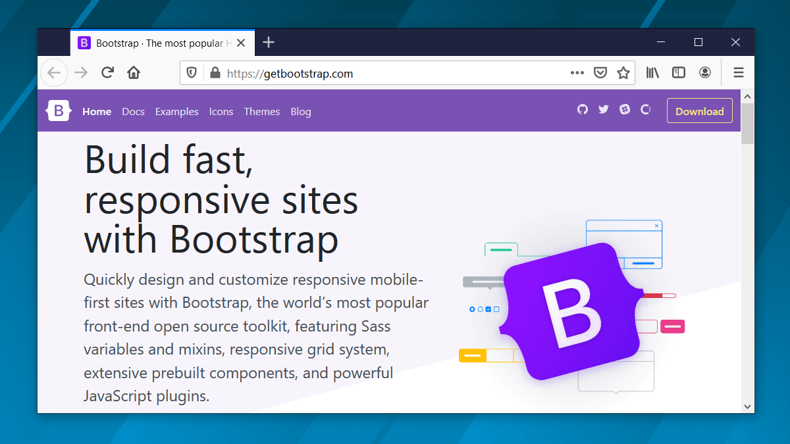
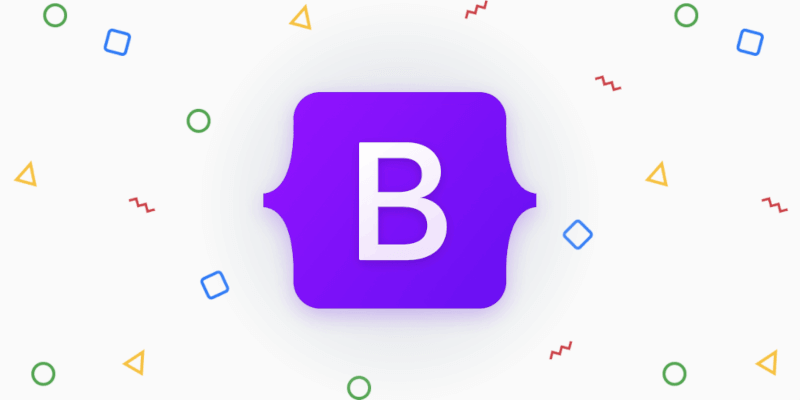

Что такое Bootstrap и зачем он нужен?
Александр Мальцев05.11.2021
126K
2
Содержание:
В этой статье мы познакомимся с фреймворком Bootstrap. Рассмотрим, что это такое и зачем он нужен. Разберём его основные преимущества и недостатки.
Bootstrap — это открытый и бесплатный HTML, CSS и JS фреймворк, который используется веб-разработчиками для быстрой вёрстки адаптивных дизайнов сайтов и веб-приложений.
От 2 990 руб/мес! Надёжный дата-центр DataPro. Много конфигураций.
smartape.ru
Фреймворк Bootstrap используется по всему миру не только независимыми разработчиками, но иногда и целыми компаниями. На Bootstrap создано очень много различных сайтов, посмотреть их можно на странице Bootstrap Expo.
Основная область его применения – это фронтенд разработка сайтов и интерфейсов админок. Среди аналогичных систем (Foundation, UIkit, Semantic UI, InK и др.) фреймворк Bootstrap является самым популярным.
Почему Bootstrap так популярен? Это связано с тем, что он позволяет верстать сайты в несколько раз быстрее, чем на «чистом» CSS и JavaScript. А в нашем мире, время – это очень ценный ресурс. Ещё один его аспект – доступность. Она сводится к тому, что предоставляет возможность даже начинающему веб-разработчику (без глубоких знаний и достаточной практики) создавать достаточно качественные макеты.
Фреймворк Bootstrap – это набор набор CSS и JavaScript файлов. Чтобы его использовать эти файлы необходимо просто подключить к странице. После этого вам станут доступны инструменты данного фреймворка: колоночная система (сетка Bootstrap), классы и компоненты.
Как он работает? Например, чтобы создать кнопку на странице с помощью Bootstrap, достаточно к ссылке или элементу button добавить всего несколько классов.
Создание кнопки в Bootstrap 5:
<!-- Чтобы сделать ссылку в виде кнопки добавим к ней 2 класса: btn и btn-success -->
<a href="#" class="btn btn-success">Ссылка, оформленная в виде кнопки</a>
Ну как? Сколько на это потребовалось времени? Да, всего несколько секунд.
А если, например, нужно создать вкладки. Для этого необходимо всего лишь скопировать готовый HTML фрагмент, и отредактировать его так, чтобы в нём остался код для определённого количества вкладок:
<!-- Bootstrap 5 -->
<nav>
<div class="nav nav-tabs" id="tab" role="tablist">
<!-- атрибут data-bs-target должен указывать на элемент, который необходимо показать -->
<button class="nav-link active" id="tab-section-1" data-bs-toggle="tab" data-bs-target="#section-1" type="button" role="tab" aria-controls="nav-section-1" aria-selected="true">Секция 1</button>
<button class="nav-link" id="tab-section-2" data-bs-toggle="tab" data-bs-target="#section-2" type="button" role="tab" aria-controls="nav-section-2" aria-selected="false">Секция 2</button>
<button class="nav-link" id="tab-section-3" data-bs-toggle="tab" data-bs-target="#section-3" type="button" role="tab" aria-controls="nav-section-3" aria-selected="false">Секция 3</button>
</div>
</nav>
<div class="tab-content p-3" id="nav-tabContent">
<!-- атрибут id определяет вкладку -->
<div class="tab-pane fade show active" id="section-1" role="tabpanel" aria-labelledby="nav-section-1-tab">
...
</div>
<div class="tab-pane" id="section-2" role="tabpanel" aria-labelledby="nav-section-2-tab">
...
</div>
<div class="tab-pane fade" id="section-3" role="tabpanel" aria-labelledby="nav-section-3-tab">
...
</div>
</div>
Всё, вкладки готовы. На это тоже ушли считанные секунды. Правда, потрясающая скорость. В этом сила Bootstrap.
Но, Bootstrap – это не просто набор готовых инструментов (HTML фрагментов, классов, компонентов и плагинов), а хорошо спроектированный фронтенд фреймворк, который довольно просто можно настроить под себя посредством редактирования Sass переменных и использования миксинов.
Bootstrap состоит из:
С чего начать изучение Bootstrap
Первое, что нам необходимо — это скачать фреймворк и подключить его к странице. Как это выполнить детально описано в статье «Установка платформы Bootstrap».
После того как мы это сделаем обычно возникает следующий вопрос: «А что дальше? Как использовать Bootstrap?». На самом деле тут нет ничего сложного, создавать страницы с использованием Bootstrap довольно просто.
Сначала необходимо изучить сетку и попрактиковаться на ней верстать макеты страниц и создавать разметку блоков. Изучить её можно тут (для тех, кто использует Bootstrap 3) или здесь (для Bootstrap 4).
К сведению, сетка в «Bootstrap 3.x» построена на float, а в «4.x» и «5.x» – на flexbox.
После того как разберётесь с сеткой нужно изучить компоненты Bootstrap (как они верстаются и настраиваются) и научиться их вставлять в нужные места страницы.
Это минимальные задачи, которые перед собой необходимо поставить, чтобы научиться верстать сайты и веб-приложения на Bootstrap.
Ну если ваша задача не просто использовать Bootstrap, а что-то в нём изменять, переделывать, то без хороших знаний CSS тут конечно уже не обойтись. Некоторые вещи, конечно, можно настроить через изменения SCSS переменных и применения миксинов, а другие – нет. И это касается любых фреймворков.
Преимущества и недостатки фреймворка Bootstrap
Преимущества Bootstrap при его использовании для frontend разработки сайтов и интерфейсов админок:
Фреймворк Bootstrap – это проект с открытым исходным кодом, доступным на Github. Он имеет лицензию MIT. Это означает, что его можно бесплатно использовать как в открытых, так и в коммерческих проектах.
Bootstrap, конечно, хороший инструмент, но на нём верстают далеко не всё. Его, например не имеет смысла использовать для:
Bootstrap, как и большинство подобных фреймворков, имеет недостатки. Среди них можно отметить следующие:
Первый недостаток можно немного «сгладить», если выполнить самостоятельную сборку проекта из исходных кодов и включить в неё только те компоненты, которые нам нужны. В этом случае код этого фреймворка будет значительно меньше. Как это выполнить в Bootstrap 4 можно посмотреть здесь, а в Bootstrap 3 - тут.
Какую версию Bootstrap выбрать
Для разработки большинства веб-проектов лучше использовать последнюю версию Bootstrap в выбранной ветке.
На текущий момент:
Bootstrap 5 рекомендуется для проектов, которые будут использоваться только в современных браузерах (поддержка IE и других браузеров не нужна). В других случаях - Bootstrap 4.
Что нового в Bootstrap 5:
Третью версию в основном имеет смысл использовать, если нужна поддержка «старых» браузеров (IE8 и IE9).
Основные отличия Bootstrap 4 от Bootstrap 3:
Компоненты Bootstrap 3 в IE8 и некоторых других версиях отображаются без градиентов, теней и закруглённых углов. Это связано с тем, что в них нет поддержки используемых для этих целей CSS3 свойств.
Следующий шаг в изучении Bootstrap, это его установка.
�